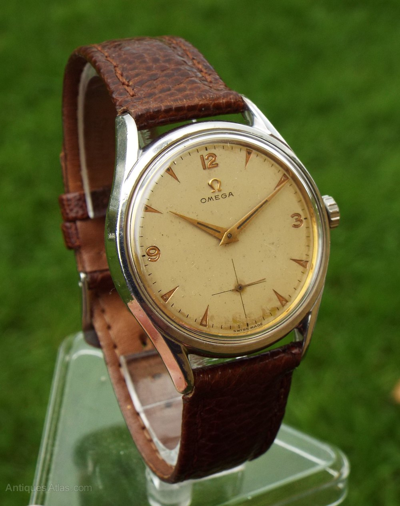

JACOB & CO Jacob & Co. is a luxury watch and jewelry brand known for its extravagant designs and high-end timepieces. Founded by Jacob Arabo in 1986, the brand has gained a reputation for its innovative and artistic approach to horology, often featuring intricate complications and unique materials.
ROLEX Rolex is a Swiss luxury watch manufacturer known for its precision, craftsmanship, and iconic designs. Founded in 1905, Rolex has become synonymous with success and prestige, producing timepieces that are both functional and stylish.
CASIO Casio is a Japanese electronics company known for its wide range of products, including watches, calculators, and musical instruments. Founded in 1946, Casio has gained popularity for its innovative designs and affordable prices.
CITIZEN Citizen is a Japanese watch brand known for its innovative technology and eco-friendly practices. Founded in 1918, Citizen has become a leading manufacturer of quartz watches and is recognized for its commitment to sustainability.
 OMEGA Omega is a Swiss luxury watch brand known for its precision and innovation. Founded in 1848, Omega has a rich history in horology, including being the official timekeeper of the Olympic Games and the first watch on the moon.
Citizen Citizen is a Japanese watch brand known for its innovative technology and eco-friendly practices. Founded in 1918, Citizen has become a leading manufacturer of quartz watches and is recognized for its commitment to sustainability.